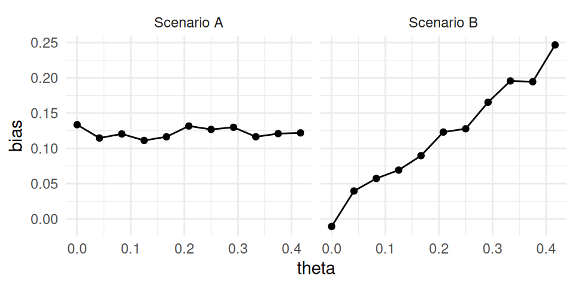

Chapter 9 Performance metrics
Once we run a simulation, we end up with a pile of results to sort through. For example, Figure 9.1 depicts the distribution of average treatment effect estimates from the cluster-randomized experiment simulation, which we generated in Chapter 8. There are three different estimators, each with 1000 replications. Each histogram is an approximation of the sampling distribution of the estimator, meaning its distribution across repetitions of the data-generating process. With results such as these, the question before us is now how to evaluate how well these procedures worked. And, if we are comparing several different estimators, how do we determine which ones work better or worse than others? In this chapter, we look at a variety of performance metrics that can answer these questions.

Figure 9.1: Sampling distribution of average treatment effect estimates from a cluster-randomized trial with a true average treatment effect of 0.3.
Performance metrics are summaries of a sampling distribution that describe how an estimator or data analysis procedure behaves on average if we could repeat the data-generating process an infinite number of times. For example, the bias of an estimator is the difference between the average value of the estimator and the corresponding target parameter. Bias measures the central tendency of the sampling distribution, capturing how far off, on average, the estimator would be from the true parameter value if we repeated the data-generating process an infinite number of times. In Figure 9.1, black dashed lines mark the true average treatment effect of 0.3 and the colored vertical lines with circles at the end mark the means of the estimators. The distance between the colored lines and the black dashed lines corresponds to the bias of the estimator. This distance is nearly zero for the aggregation estimator and the multilevel model estimator, but larger for the linear regression estimator.
Different types of data-analysis results produce different types of information, and so the relevant set of performance metrics depends on the type of data analysis result under evaluation. For procedures that produce point estimates or point predictions, conventional performance metrics include bias, variance, and root mean squared error. If the point estimates come with corresponding standard errors, then we may also want to evaluate how accurately the standard errors represent the true uncertainty of the point estimators; conventional performance metrics for capturing this include the relative bias and relative root mean squared error of the variance estimator. For procedures that produce confidence intervals or other types of interval estimates, conventional performance metrics include the coverage rate and average interval width. Finally, for inferential procedures that involve hypothesis tests (or more generally, classification tasks), conventional performance metrics include Type I error rates and power. We describe each of these metrics in Sections 9.1 through 9.4.
Performance metrics are defined with respect to sampling distributions, or the results of applying a data analysis procedure to data generated according to a particular process across an infinite number of replications. In defining specific metrics, we will use conventional statistical notation for the means, variances, and other moments of the sampling distribution. Specifically, we will use the expectation operator \(\E()\) to denote the mean of a sampling distribution, \(\M()\) to denote the median of a sampling distribution, \(\Var()\) to denote the variance of a sampling distribution, and \(\Prob()\) to denote probabilities of specific outcomes with respect to the sampling distribution. We will use \(\Q_p()\) to denote the \(p^{th}\) quantile of a distribution, which is the value \(x\) such that \(\Prob(T \leq x) = p\). With this notation, the median is equivalent to \(\M() = \Q_{0.5}()\).
For some simple combinations of data-generating processes and data analysis procedures, it may be possible to derive exact mathematical formulas for calculating some performance metrics (such as exact mathematical expressions for the bias and variance of the linear regression estimator).
But for many problems, the math is difficult or intractable—that’s why we do simulations in the first place.
Simulations do not produce the exact sampling distribution or give us exact values of performance metrics.
Instead, simulations yield samples—usually large samples—from the the sampling distribution, and we can use these to compute estimates of the performance metrics of interest.
In Figure 9.1, we calculated the bias of each estimator by taking the mean of 1000 observations from its sampling distribution; if we were to repeat the whole set of calculations (with a different seed), then our bias results would shift slightly.
In working with simulation results, it is important to keep track of the degree of uncertainty in performance metric estimates. We call such uncertainty Monte Carlo error because it is the error arising from using a finite number of replications of the Monte Carlo simulation process. One way to quantify it is with the Monte Carlo standard error (MCSE), or the standard error of a performance estimate based on a finite number of replications. Just as when we analyze real data, we can apply statistical techniques to estimate the MCSE and even to generate confidence intervals for performance metrics.
The size of an MCSE is driven by how many replications we use: if we only use a few, we will have noisy estimates of performance with large MCSEs; if we use millions of replications, the MCSE will be tiny. It is important to keep in mind that the MCSE is not measuring anything about how a data analysis procedure performs in general. It only describes how precisely we have approximated a performance criterion, an artifact of how we conducted the simulation. Moreover, MCSEs are under our control. Given a desired MCSE, we can determine how many replications we would need to ensure our performance estimates have the specified level of precision. Section 9.7 provides details about how to compute MCSEs for conventional performance measures, along with some discussion of general techniques for computing MCSE for less conventional measures.
9.1 Metrics for Point Estimators
The most common performance measures used to assess a point estimator are bias, variance, mean squared error, and root mean squared error. Bias compares the mean of the sampling distribution to the target parameter. Positive bias implies that the estimator tends to systematically over-state the quantity of interest, while negative bias implies that it systematically under-shoots the quantity of interest. If bias is zero (or nearly zero), we say that the estimator is unbiased (or approximately unbiased). Variance (or its square root, the true standard error) describes the spread of the sampling distribution, or the extent to which it varies around its central tendency. All else equal, we would like estimators to have low variance (or to be more precise). Root mean squared error (RMSE) is a conventional measure of the overall accuracy of an estimator, or its average degree of error with respect to the target parameter. For absolute assessments of performance, an estimator with low bias, low variance, and thus low RMSE is desired. In making comparisons of several different estimators, one with lower RMSE is usually preferable to one with higher RMSE. If two estimators have comparable RMSE, then the estimator with lower bias would usually be preferable.
To define these quantities more precisely, let’s consider a generic estimator \(T\) that is targeting a parameter \(\theta\). We call the target parameter the estimand. In most cases, in running our simulation we set the estimand \(\theta\) and then generate a (typically large) series of \(R\) datasets, for each of which \(\theta\) is the true target parameter. We then analyze each dataset, obtaining a sample of estimates \(T_1,...,T_R\). Formally, the bias, variance, and RMSE of \(T\) are defined as \[ \begin{aligned} \Bias(T) &= \E(T) - \theta, \\ \Var(T) &= \E\left[\left(T - \E (T)\right)^2 \right], \\ \RMSE(T) &= \sqrt{\E\left[\left(T - \theta\right)^2 \right]}. \end{aligned} \tag{9.1} \] These three measures are inter-connected. In particular, RMSE is the combination of (squared) bias and variance, as in \[ \left[\RMSE(T)\right]^2 = \left[\Bias(T)\right]^2 + \Var(T). \tag{9.2} \]
When conducting a simulation, we do not compute these performance measures directly but rather must estimate them using the replicates \(T_1,...,T_R\) generated from the sampling distribution. There’s nothing very surprising about how we construct estimates of the performance measures. It is just a matter of substituting sample quantities in place of the expectations and variances. Specifically, we estimate bias by taking \[ \widehat{\Bias}(T) = \bar{T} - \theta, \tag{9.3} \] where \(\bar{T}\) is the arithmetic mean of the replicates, \[ \bar{T} = \frac{1}{R}\sum_{r=1}^R T_r. \] We estimate variance by taking the sample variance of the replicates, as \[ S_T^2 = \frac{1}{R - 1}\sum_{r=1}^R \left(T_r - \bar{T}\right)^2. \tag{9.4} \] The square root of \(S^2_T\), \(S_T\) is an estimate of the true standard error of \(T\), or the standard deviation of the estimator across an infinite set of replications of the data-generating process.12 We usually prefer to work with the true SE \(S_T\) rather than the sampling variance \(S_T^2\) because the former quantity has the same units as the target parameter.
Finally, the RMSE estimate can be calculated as \[ \widehat{\RMSE}(T) = \sqrt{\frac{1}{R} \sum_{r = 1}^R \left( T_r - \theta\right)^2 }. \tag{9.5} \] Often, people talk about the MSE (Mean Squared Error), which is just the square of RMSE. Just like the true SE is usually easier to interpret than the sampling variance, units of RMSE are easier to interpret than the units of MSE.
It is important to recognize that the above performance measures depend on the scale of the parameter. For example, if our estimators are measuring a treatment impact in dollars, then the bias, SE, and RMSE of the estimators are all in dollars. (The variance and MSE would be in dollars squared, which is why we take their square roots to put them back on the more intepretable scale of dollars.)
In many simulations, the scale of the outcome is an arbitrary feature of the data-generating process, making the absolute magnitude of performance metrics less meaningful. To ease interpretation of performance metrics, it is useful to consider their magnitude relative to the baseline level of variation in the outcome. One way to achieve this is to generate data so the outcome has unit variance (i.e., we generate outcomes in standardized units). Doing so puts the bias, true standard error, and root mean-squared error on the scale of standard deviation units, which can facilitate interpretation about what constitutes a meaningfully large bias or a meaningful difference in RMSE.
In addition to understanding the scale of these performance metrics, it is also important to recognize that their magnitude depends on the scale of the parameter. A non-linear transformation of a parameter will generally lead to changes in the magnitude of the performance metrics. For instance, suppose that \(\theta\) measures the proportion of time that something occurs. One natural way to transform this parameter would be to put it on the log-odds (logit) scale. However, because the log-odds transformation is non-linear, \[ \text{Bias}\left[\text{logit}(T)\right] \neq \text{logit}\left(\text{Bias}[T]\right), \qquad \text{RMSE}\left[\text{logit}(T)\right] \neq \text{logit}\left(\text{RMSE}[T]\right), \] and so on. This is a consequence of how the performance metrics are defined. One might see this property as a limitation on the utility of using bias and RMSE to measure the performance of an estimator, because these metrics can be quite sensitive to the scale of the parameter.
9.1.1 Comparing the Performance of the Cluster RCT Estimation Procedures
We now demonstrate the calculation of performance metrics for the point estimators of average treatment effects in the cluster-RCT example. In Chapter 8, we generated a large set of replications of several different treatment effect estimators. Using these results, we can assess the bias, standard error, and RMSE of three different estimators of the ATE. These performance metrics address the following questions:
- Is the estimator systematically off? (bias)
- Is it precise? (standard error)
- Does it predict well? (RMSE)
Let us see how the three estimators compare on these metrics.
Are the estimators biased?
Bias is defined with respect to a target estimand. Here we assess whether our estimates are systematically different from the \(\gamma_1\) parameter, which we defined in standardized units by setting the standard deviation of the student-level distribution of the outcome equal to one. For these data, we generated data based on a school-level ATE parameter of 0.30 SDs.
ATE <- 0.30
runs %>%
group_by( method ) %>%
summarise(
mean_ATE_hat = mean( ATE_hat ),
bias = mean( ATE_hat ) - ATE
)## # A tibble: 3 × 3
## method mean_ATE_hat bias
## <chr> <dbl> <dbl>
## 1 Agg 0.306 0.00561
## 2 LR 0.390 0.0899
## 3 MLM 0.308 0.00788There is no indication of major bias for aggregation or multi-level modeling. Linear regression, with a bias of about 0.09 SDs, appears about ten times as biased as the other estimators. This is because the linear regression is targeting the person-level average average treatment effect. The data-generating process of this simulation makes larger sites have larger effects, so the person-level average effect is going to be higher because those larger sites will count more. In contrast, our estimand is the school-level average treatment effect, or the simple average of each school’s true impact, which we have set to 0.30. The aggregation and multi-level modeling methods target this school-level average effect. If we had instead decided that the target estimand should be the person-level average effect, then we would find that linear regression is unbiased whereas aggregation and multi-level modeling are biased. This example illustrates how crucial it is to think carefully about the appropriate target parameter and to assess performance with respect to a well-justified and clearly articulated target.
Which method has the smallest standard error?
The true standard error measures the degree of variability in a point estimator. It reflects how stable our estimates are across replications of the data-generating process. We calculate the standard error by taking the standard deviation of the replications of each estimator. For purposes of interpretation, it is useful to compare the true standard errors to the variation in a benchmark estimator. Here, we treat the linear regression estimator as the benchmark and compute the magnitude of the true SEs of each method relative to the SE of the linear regression estimator:
true_SE <-
runs %>%
group_by( method ) %>%
summarise( SE = sd( ATE_hat ) ) %>%
mutate( per_SE = SE / SE[method=="LR"] )
true_SE## # A tibble: 3 × 3
## method SE per_SE
## <chr> <dbl> <dbl>
## 1 Agg 0.168 0.916
## 2 LR 0.183 1
## 3 MLM 0.168 0.916In a real data analysis, these standard errors are what we would be trying to approximate with a standard error estimator. Aggregation and multi-level modeling have SEs about 8% smaller than Linear Regression. For these data-generating conditions, aggregation and multi-level modeling are preferable to linear regression because they are more precise.
Which method has the smallest Root Mean Squared Error?
So far linear regression is not doing well: it has more bias and a larger standard error than the other two estimators. We can assess overall accuracy by combining these two quantities with the RMSE:
runs %>%
group_by( method ) %>%
summarise(
bias = mean( ATE_hat - ATE ),
SE = sd( ATE_hat ),
RMSE = sqrt( mean( (ATE_hat - ATE)^2 ) )
) %>%
mutate(
per_RMSE = RMSE / RMSE[method=="LR"]
)## # A tibble: 3 × 5
## method bias SE RMSE per_RMSE
## <chr> <dbl> <dbl> <dbl> <dbl>
## 1 Agg 0.00561 0.168 0.168 0.823
## 2 LR 0.0899 0.183 0.204 1
## 3 MLM 0.00788 0.168 0.168 0.823We also include SE and bias as points of reference.
RMSE takes into account both bias and variance. For aggregation and multi-level modeling, the RMSE is the same as the standard error, which makes sense because these estimators are not biased. For linear regression, the combination of bias plus increased variability yields a higher RMSE, with the standard error dominating the bias term (note how RMSE and SE are more similar than RMSE and bias). The difference between the estimators are pronounced because RMSE is the square root of the squared bias and squared standard errors. Overall, aggregation and multi-level modeling have RMSEs around 17% smaller than linear regression—a consequential difference in accuracy.
9.1.2 Less Conventional Performance metrics
Depending on the model and estimation procedures being examined, a range of different metrics might be used to assess estimator performance. For point estimation, we have introduced bias, variance and MSE as the three core measures of performance. However, all of these measures are sensitive to outliers in the sampling distribution. Consider an estimator that generally does well, except for an occasional large mistake. Because conventional measures are based on arithmetic averages, they will indicate that the estimator performs very poorly overall. Other metrics exist, such as the median bias and the median absolute deviation of \(T\), which are less sensitive to outliers in the sampling distribution compared to the conventional metrics.
Median bias is an alternative measure of the central tendency of a sampling distribution. Positive median bias implies that more than 50% of the sampling distribution exceeds the quantity of interest, while negative median bias implies that more than 50% of the sampling distribution fall below the quantity of interest. Formally, \[ \text{Median-Bias}(T) = \M(T) - \theta \tag{9.6}. \] An estimator of median bias is computed using the sample median of \(T_1,...,T_R\).
Another robust measure of central tendency is based on winsorizing the sampling distribution, or truncating all errors larger than a certain maximum size. Using a winsorized distribution amounts to arguing that you don’t care about errors beyond a certain size, so anything beyond a certain threshold will be treated the same as if it were exactly on the threshold. The threshold for truncation is usually defined relative to the first and third quartiles of the sampling distribution, along with a given span of the inter-quartile range. The thresholds for truncation are taken as \[ L_w = \Q_{0.25}(T) - w \times (\Q_{0.75}(T) - \Q_{0.25}(T)) \quad \text{and} \quad U_w = \Q_{0.75}(T) + w \times (\Q_{0.75}(T) - \Q_{0.25}(T)), \] where \(\Q_{0.25}(T)\) and \(\Q_{0.75}(T)\) are the first and third quartiles of the distribution of \(T\), respectively, and \(w\) is the number of inter-quartile ranges below which an observation will be treated as an outlier.13 Let \(T^{(w)} = \min\{\max\{T, L_w\}, U_w\}\). The winsorized bias is then defined as \[ \text{Bias}(T^{(w)}) = \E\left(T^{(w)}\right) - \theta. \tag{9.7} \] Alternative measures of spread and overall accuracy can be defined along similar lines, using winsorized values in place of the raw values of \(T\). Specifically, \[ \begin{aligned} \Var\left(T^{(w)}\right) &= \E\left[\left(T^{(w)} - \E (T^{(w)})\right)^2 \right], \\ \RMSE\left(T^{(w)}\right) &= \sqrt{\E\left[\left(T^{(w)} - \theta\right)^2 \right]}. \end{aligned} \tag{9.8} \]
To compute estimates of the winsorized performance criteria, we substitute sample quantiles in place of \(\Q_{0.25}(T)\) and \(\Q_{0.25}(T)\) to get estimated thresholds, \(\hat{L}_w\) and \(\hat{U}_w\), find \(\hat{T}_r^{(w)} = \min\{\max\{T_r, \hat{L}_w\}, \hat{U}_w\}\), and compute the sample performance metrics using Equations (9.3), (9.4), and (9.5), but with \(\hat{T}_r^{(w)}\) in place of \(T_r\).
A further robust measure of central tendency used the \(p \times 100\%\)-trimmed mean, which ignores the estimates in the lowest and highest \(p\)-quantiles of the sampling distribution. Formally, the trimmed-mean bias is \[ \text{Trimmed-Bias}(T; p) = \E\left[ T \left| \Q_{p}(T) < T < \Q_{(1 - p)}(T) \right.\right] - \theta. \tag{9.9} \] Median bias is thus a special case of trimmed mean bias, with \(p = 0.5\). To estimate the trimmed bias, we use sample quantiles \(\hat{Q}_p\) and \(\hat{Q}_{(1 - p)}\) and take the mean of the middle \(1 - 2p\) fraction of the distribution \[ \widehat{\text{Trimmed-Bias}}(T; p) = \frac{1}{(1 - 2p)R} \sum_{r=1}^R T_r \times I\left(\hat{Q}_{p} < T < \hat{Q}_{(1 - p)}\right) - \theta. \tag{9.10} \] For a symmetric sampling distribution, winsorized bias and trimmed-mean bias will be the same as the conventional (mean) bias, but will be less affected by outlying values (i.e., values of \(T\) very far from the center of the distribution). However, if a sampling distribution is not symmetric, winsorized bias and trimmed-mean bias become distinct performance measures, which put less emphasis on large errors compared to the conventional bias metric.
Alternative measures of the overall accuracy of an estimator can also be defined along similar lines.
For instance, an alternative to RMSE is to use the median absolute error (MAE), defined as
\[
\text{MAE} = \M\left(\left|T - \theta\right|\right),
\tag{9.11}
\]
which can be estimated by taking the sample median \(|T_1 - \theta|, |T_2 - \theta|, ..., |T_R - \theta|\).
Many other robust measures of the spread of the sampling distribution are also available, including the Rosseeuw-Croux scale estimator \(Q_n\) (Rousseeuw and Croux 1993) and the biweight midvariance (Wilcox 2022).
Maronna, Martin, and Yohai (2006) provide a useful introduction to these metrics and robust statistics more broadly.
The robustbase package (Maechler et al. 2024) provides functions for calculating many of these robust statistics.
9.2 Metrics for Standard Error Estimators
Statistics is concerned not only with how to estimate things, but also with assessing how good an estimate is—that is, understanding the extent of uncertainty in estimates of target parameters. These concerns apply for Monte Carlo simulation studies as well. In a simulation, we can simply compute an estimator’s actual properties. When we use an estimator with real data, we need to estimate its associated standard error and generate confidence intervals and other assessments of uncertainty. To understand if these uncertainty assessments work in practice, we need to evaluate not only the behavior of the estimator itself, but also the behavior of these associated quantities. In other words, we generally want to know not only whether a point estimator is doing a good job, but also whether we can obtain a good standard error for that point estimator.
Commonly used metrics for quantifying the performance of estimated standard errors include relative bias, relative standard error, and relative root mean squared error. These metrics are defined in relative terms (rather than absolute ones) by comparing their magnitude to the true degree of uncertainty. Typically, performance metrics are computed for variance estimators rather than standard error estimators. There are a few reasons for working with variance rather than standard error. First, in practice, so-called unbiased standard errors usually are not in fact actually unbiased.14 For linear regression, for example, the classic standard error estimator is an unbiased variance estimator, but the standard error estimator is not exactly unbiased because \[ \E[ \sqrt{ V } ] \neq \sqrt{ \E[ V ] }. \] Variance is also the metric that gives us the bias-variance decomposition of \(MSE = Variance + Bias^2\). Thus, if we are trying to determine whether MSE is due to instability or systematic bias, operating in this squared space may be preferable.
To make this concrete, let us consider a generic standard error estimator \(\widehat{SE}\) to go along with our generic estimator \(T\) of target parameter \(\theta\), and let \(V = \widehat{SE}^2\). The simulation yields a large sample of standard errors, \(\widehat{SE}_1,...,\widehat{SE}_R\) and variance estimators \(V_r = \widehat{SE}_r^2\) for \(r = 1,...,R\). Formally, the relative bias, standard error, and RMSE of \(V\) are defined as \[ \begin{aligned} \text{Relative Bias}(V) &= \frac{\E(V)}{\Var(T)} \\ \text{Relative SE}(V) &= \frac{\Var(V)}{\Var(T)} \\ \text{Relative RMSE}(V) &= \frac{\sqrt{\E\left[\left(V - \Var(T)\right)^2 \right]}}{\Var(T)}. \end{aligned} \tag{9.12} \] In contrast to performance metrics for \(T\), we define these metrics in relative terms because the raw magnitude of \(V\) is not a stable or interpretable parameter. Rather, the sampling distribution of \(V\) will generally depend on many of the parameters of the data-generating process, including the sample size and any other design parameters. Defining bias in relative terms makes for a more interpretable metric: a value of 1 corresponds to exact unbiasedness of the variance estimator. Relative bias measures proportionate under- or over-estimation. For example, a relative bias of 1.12 would mean the standard error was, on average, 12% too large. We discuss relative performance measures further in Section 9.5.
To estimate these relative performance measures, we proceed by substituting sample quantities in place of the expectations and variances. In contrast to the performance metrics for \(T\), we will not generally be able to compute the true degree of uncertainty exactly. Instead, we must estimate the target quantity \(\Var(T)\) using \(S_T^2\), the sample variance of \(T\) across replications. Denoting the arithmetic mean of the variance estimates as \[ \bar{V} = \frac{1}{R} \sum_{r=1}^R V_r \] and the sample variance as \[ S_V^2 = \frac{1}{R - 1}\sum_{r=1}^R \left(V_r - \bar{V}\right)^2, \] we estimate the relative bias, standard error, and RMSE of \(V\) using \[ \begin{aligned} \widehat{\text{Relative Bias}}(V) &= \frac{\bar{V}}{S_T^2} \\ \widehat{\text{Relative SE}}(V) &= \frac{S_V}{S_T^2} \\ \widehat{\text{Relative RMSE}}(V) &= \frac{\sqrt{\frac{1}{R}\sum_{r=1}^R\left(V_r - S_T^2\right)^2}}{S_T^2}. \end{aligned} \tag{9.13} \] These performance measures are informative about the properties of the uncertainty estimator \(V\) (or standard error \(\widehat{SE}\)), which have implications for the performance of other uncertainty assessments such as hypothesis tests and confidence intervals. Relative bias describes whether the central tendency of \(V\) aligns with the actual degree of uncertainty in the point estimator \(T\). Relative bias of less than 1 implies that \(V\) tends to under-state the amount of uncertainty, which will lead to confidence intervals that are overly narrow and do not cover the true parameter value at the desired rate. Relative bias greater than 1 implies that \(V\) tends to over-state the amount of uncertainty in the point estimator, making it seem like \(T\) is less precise than it truly is. Relative standard errors describe the variability of \(V\) in comparison to the true degree of uncertainty in \(T\)—the lower the better. A relative standard error of 0.5 would mean that the variance estimator has average error of 50% of the true uncertainty, implying that \(V\) will often be off by a factor of 2 compared to the true sampling variance of \(T\). Ideally, a variance estimator will have small relative bias, small relative standard errors, and thus small relative RMSE.
9.2.1 Satterthwaite degrees of freedom
Another more abstract measure of the stability of a variance estimator is its Satterthwaite degrees of freedom. With some simple statistical methods such as two-sample \(t\) tests, classical analysis of variance, and linear regression with homoskedastic errors, the variance estimator is computed by taking a sum of squares of normally distributed errors. In these cases, the sampling distribution of the variance estimator is a multiple of a chi-squared distribution, with degrees of freedom corresponding to the number of independent observations used to compute the sum of squares. In the context of analysis of variance problems, Satterthwaite (1946) described a method of approximating the variability of more complex statistics, involving linear combinations of sums of squares, by using a chi-squared distribution with a certain degrees of freedom. When applied to an arbitrary variance estimator \(V\), these degrees of freedom can be interpreted as the number of independent observations going into a sum of squares that would lead to a variance estimator that is equally precise as \(V\). More succinctly, these degrees of freedom correspond to the amount of independent observations used to estimate \(V\).
Following Satterthwaite (1946), we define the degrees of freedom of \(V\) as \[ df = \frac{2 \left[\E(V)\right]^2}{\Var(V)}. \tag{9.14} \] We can estimate the degrees of freedom by taking \[ \widehat{df} = \frac{2 \bar{V}^2}{S_V^2}. \tag{9.15} \] For simple statistical methods in which \(V\) is based on a sum-of-squares of normally distributed errors, then the Satterthwaite degrees of freedom will be constant and correspond exactly to the number of independent observations in the sum of squares. Even with more complex methods, the degrees of freedom are interpretable: higher degrees of freedom imply that \(V\) is based on more observations, and thus will be a more precise estimate of the actual degree of uncertainty in \(T\).
9.2.2 Assessing SEs for the Cluster RCT Simulation
Returning to the cluster RCT example, we will assess whether our estimated SEs are about right by comparing the average estimated (squared) standard error versus the true sampling variance. Our standard errors are inflated if they are systematically larger than they should be, across the simulation runs. We will also look at how stable our variance estimates are by comparing their standard deviation to the true sampling variance and by computing the Satterthwaite degrees of freedom.
SE_performance <-
runs %>%
mutate( V = SE_hat^2 ) %>%
group_by( method ) %>%
summarise(
SE_sq = var( ATE_hat ),
V_bar = mean( V ),
rel_bias = V_bar / SE_sq,
S_V = sd( V ),
rel_SE_V = S_V / SE_sq,
df = 2 * mean( V )^2 / var( V )
)
SE_performance## # A tibble: 3 × 7
## method SE_sq V_bar rel_bias S_V rel_SE_V
## <chr> <dbl> <dbl> <dbl> <dbl> <dbl>
## 1 Agg 0.0282 0.0304 1.08 0.00818 0.290
## 2 LR 0.0336 0.0344 1.02 0.0117 0.349
## 3 MLM 0.0282 0.0304 1.08 0.00818 0.290
## # ℹ 1 more variable: df <dbl>The variance estimators for Agg and MLM appear to be a bit conservative on average, with relative bias of around 1.08, or about 8% higher than the true sampling variance.
The column labelled rel_SE_V reports how variable the variance estimators are relative to the true sampling variances of the estimators.
The column labelled df reports the Satterthwaite degrees of freedom of each variance estimator.
Both of these measures indicate that the linear regression variance estimator is less stable than the other methods, with around 10 fewer degrees of freedom.
The linear regression method uses a cluster-robust variance estimator, which is known to be a bit unstable (Cameron and Miller 2015).
Overall, it is a bad day for linear regression.
9.3 Metrics for Confidence Intervals
Some estimation procedures provide confidence intervals (or confidence sets) which are ranges of values, or interval estimators, that should include the true parameter value with a specified confidence level. For a 95% confidence level, the interval should include the true parameter in 95% replications of the data-generating process. However, with the exception of some simple methods and models, methods for constructing confidence intervals usually involve approximations and simplifying assumptions, so their actual coverage rate might deviate from the intended confidence level.
We typically measure confidence interval performance along two dimensions: coverage rate and expected width. Suppose that the confidence interval is for the target parameter \(\theta\) and has coverage level \(\beta\) for \(0 < \beta < 1\). Denote the lower and upper end-points of the \(\beta\)-level confidence interval as \(A\) and \(B\). \(A\) and \(B\) are random quantities—they will differ each time we compute the interval on a different replication of the data-generating process. The coverage rate of a \(\beta\)-level interval estimator is the probability that it covers the true parameter, formally defined as \[ \text{Coverage}_\beta(A,B) = \Prob(A \leq \theta \leq B). \tag{9.16} \] For a well-performing interval estimator, \(\text{Coverage}_\beta\) will at least \(\beta\) and, ideally will not exceed \(\beta\) by too much. The expected width of a \(\beta\)-level interval estimator is the average difference between the upper and lower endpoints, formally defined as \[ \text{Width}_\beta(A,B) = \E(B - A). \tag{9.17} \] Smaller expected width means that the interval tends to be narrower, on average, and thus more informative about the value of the target parameter.
In practice, we approximate the coverage and width of a confidence interval by summarizing across replications of the data-generating process. Let \(A_r\) and \(B_r\) denote the lower and upper end-points of the confidence interval from simulation replication \(r\), and let \(W_r = B_r - A_r\), all for \(r = 1,...,R\). The coverage rate and expected length measures can be estimated as \[ \begin{aligned} \widehat{\text{Coverage}}_\beta(A,B) &= \frac{1}{R}\sum_{r=1}^R I(A_r \leq \theta \leq B_r) \\ \widehat{\text{Width}}_\beta(A,B) &= \frac{1}{R} \sum_{r=1}^R W_r = \frac{1}{R} \sum_{r=1}^R \left(B_r - A_r\right). \end{aligned} \tag{9.18} \] Following a strict statistical interpretation, a confidence interval performs acceptably if it has actual coverage rate greater than or equal to \(\beta\). If multiple tests satisfy this criterion, then the test with the lowest expected width would be preferable. Some analysts prefer to look at lower and upper coverage separately, where lower coverage is \(\Prob(A \leq \theta)\) and upper coverage is \(\Prob(\theta \leq B)\).
In many instances, confidence intervals are constructed using point estimators and uncertainty estimators. For example, a conventional Wald-type confidence interval is centered on a point estimator, with end-points taken to be a multiple of an estimated standard error below and above the point estimator: \[ A = T - c \times \widehat{SE}, \quad B = T + c \times \widehat{SE} \] for some critical value \(c\) (e.g.,for a normal critical value with a \(\beta = 0.95\) confidence level, \(c = 1.96\)). Because of these connections, confidence interval coverage will often be closely related to the performance of the point estimator and uncertainty estimator. Biased point estimators will tend to have confidence intervals with coverage below the desired level because they are not centered in the right place. Likewise, variance estimators that have relative bias below 1 will tend to produce confidence intervals that are too short, leading to coverage below the desired level. Thus, confidence interval coverage captures multiple aspects of the performance of an estimation procedure.
9.3.1 Confidence Intervals in the Cluster RCT Simulation
Returning to the CRT simulation, we will examine the coverage and expected width of normal Wald-type confidence intervals for each of the estimators under consideration.
To do this, we first have to calculate the confidence intervals because we did not do so in the estimation function.
We compute a normal critical value for a \(\beta = 0.95\) confidence level using qnorm(0.975), then compute the lower and upper end-points using the point estimators and estimated standard errors:
runs_CIs <-
runs %>%
mutate(
A = ATE_hat - qnorm(0.975) * SE_hat,
B = ATE_hat + qnorm(0.975) * SE_hat
)Now we can estimate the coverage rate and expected width of these confidence intervals:
runs_CIs %>%
group_by( method ) %>%
summarise(
coverage = mean( A <= ATE & ATE <= B ),
width = mean( B - A )
)## # A tibble: 3 × 3
## method coverage width
## <chr> <dbl> <dbl>
## 1 Agg 0.942 0.677
## 2 LR 0.908 0.717
## 3 MLM 0.943 0.677The coverage rate is close to the desired level of 0.95 for the multilevel model and aggregation estimators, but it is around 5 percentage points too low for linear regression. The lower-than-nominal coverage level occurs because of the bias of the linear regression point estimator. The linear regression confidence intervals are also a bit wider than the other methods due to the larger sampling variance of its point estimator and higher variability (lower degrees of freedom) of its standard error estimator.
The normal Wald-type confidence intervals we have examined here are based on fairly rough approximations. In practice, we might want to examine more carefully constructed intervals such as ones that use critical values based on \(t\) distributions or ones constructed by profile likelihood. Especially in scenarios with a small or moderate number of clusters, such methods might provide better intervals, with coverage closer to the desired confidence level. See Exercise 9.10.2.
9.4 Metrics for Inferential Procedures (Hypothesis Tests)
Hypothesis testing involves specifying a null hypothesis, such as that there is no difference in average outcomes between two experimental groups, collecting data, and evaluating whether the observed data is compatible with the null hypothesis. Hypothesis testing procedures are often formulated in terms of a \(p\)-value, which measures how extreme or surprising a feature of the observed data (a test statistic) is relative to what one would expect if the null hypothesis is true. A small \(p\)-value (such as \(p < .05\) or \(p < .01\)) indicates that the observed data would be unlikely to occur if the null is true, leading the researcher to reject the null hypothesis. Alternately, testing procedures might be formulated by comparing a test statistic to a specified critical value; a test statistic exceeding the critical value would lead the researcher to reject the null.
Hypothesis testing procedures aim to control the level of false positives, corresponding to the probability that the null hypothesis is rejected when it holds in truth. The level of a testing procedure is often denoted as \(\alpha\), and it has become conventional in many fields to conduct tests with a level of \(\alpha = .05\).15 Just as in the case of confidence intervals, hypothesis testing procedures can sometimes be developed that will have false positive rates exactly equal to the intended level \(\alpha\). However, in many other problems, hypothesis testing procedures involve approximations or assumption violations, so that the actual rate of false positives might deviate from the intended \(\alpha\)-level. When we evaluate a hypothesis testing procedure, we are concerned with two primary measures of performance: validity and power.
9.4.1 Validity
Validity pertains to whether we erroneously reject a true null more than we should. An \(\alpha\)-level testing procedure is valid if it has no more than an \(\alpha\) chance of rejecting the null, when the null is true. This means that if we conducted a valid testing procedure 1000 times, where the null holds for all of those 1000 replications, we should not see more than about \(1000 \alpha\) rejections. If we were using the conventional \(\alpha = .05\) level, then we should reject the null in only 50 of the 1000 replications.
To assess validity, we will need to specify a data generating process where the null hypothesis holds (e.g., where there is no difference in average outcomes between experimental groups). We then generate a large series of data sets with a true null, conduct the testing procedure on each dataset and record the \(p\)-value or critical value, then score whether we reject the null hypothesis. In practice, may be interested in evaluating a testing procedure by exploring data generation processes where the null is true but other aspects of the data (such as outliers, skewed outcome distributions, or small sample size) make estimation difficult, or where auxiliary assumptions of the testing procedure are violated. Examining such data-generating processes allows us to understand if our methods are robust to patterns that might be encountered in real data analysis. The key to evaluating the validity of a procedure is that, for whatever data-generating process we examine, the null hypothesis must be true.
9.4.2 Power
Power is concerned with the chance that we notice when an effect or a difference exists—that is, the probability of rejecting the null hypothesis when it does not actually hold. Compared to validity, power is a more nuanced concept because larger effects will clearly be easier to notice than smaller ones, and more blatant violations of a null hypothesis will be easier to identify than subtle ones. Furthermore, the rate at which we can detect violations of a null will depend on the \(\alpha\) level of the testing procedure. A lower \(\alpha\) level will make for a less sensitive test, requiring stronger evidence to rule out a null hypothesis. Conversely, a higher \(\alpha\) level will reject more readily, leading to higher power but at a cost of increased false positives. When assessing validity, we want the rejection rate to be at or below the specified \(\alpha\) level, and when assessing power we want the rejection rate to be as high as possible.
We find it useful to think of power as a function rather than as a single quantity because its absolute magnitude will generally depend on the sample size of a dataset and the magnitude of the effect of interest. Because of this, power evaluations will typically involve examining a sequence of data-generating scenarios with increasing sample size or increasing effect size. Further, if our goal is to evaluate several different testing procedures, the absolute power of a procedure will be of less concern than the relative performance of one procedure compared to another.
In order to evaluate the power of a testing procedure by simulation, we will need to generate data where there is something to detect. In other words, we will need to ensure that the null hypothesis is violated (and that some specific alternative hypothesis of interest holds). The process of evaluating the power of a testing procedure is otherwise identical to that for evaluating its validity: generate many datasets, carry out the testing procedure, and track the rate at which the null hypothesis is rejected. The only difference is the conditions under which the data are generated.
9.4.3 The Rejection Rate
When evaluating both validity and power, the main performance measure is the rejection rate of the hypothesis test. Letting \(P\) be the p-value from a procedure for testing the null hypothesis that a parameter \(\theta = 0\), generated under a data-generating process with parameter \(\theta\) (which could in truth be zero or non-zero). The rejection rate is then \[ \rho_\alpha(\theta) = \Prob(P < \alpha) \tag{9.19} \] When data are simulated from a process in which the null hypothesis is true, then the rejection rate is equivalent to the Type-I error rate of the test, which should ideally be near the desired \(\alpha\) level. When the data are simulated from a process in which the null hypothesis is violated, then the rejection rate is equivalent to the power of the test (for the given alternate hypothesis specified in the data-generating process). Ideally, a testing procedure should have actual Type-I error equal to the nominal level \(\alpha\) (this is the definition of validity), but such exact tests are rare.
To estimate the rejection rate of a test, we calculate the proportion of replications where the test rejects the null hypothesis. Letting \(P_1,...,P_R\) be the p-values simulated from \(R\) replications of a data-generating process with true parameter \(\theta\), we estimate the rejection rate by calculating \[ r_\alpha(\theta) = \frac{1}{R} \sum_{r=1}^R I(P_r < \alpha). \tag{9.20} \] It may be of interest to evaluate the performance of the test at several different \(\alpha\) levels. For instance, Brown and Forsythe (1974) evaluated the Type-I error rates and power of their tests using \(\alpha = .01\), \(.05\), and \(.10\). Simulating the \(p\)-value of the test makes it easy to estimate rejection rates for multiple \(\alpha\) levels, since we simply need to apply Equation (9.20) for several values of \(\alpha\). When simulating from a data-generating process where the null hypothesis holds, one can also plot the empirical cumulative distribution function of the \(p\)-values; for an exactly valid test, the \(p\)-values should follow a standard uniform distribution with a cumulative distribution falling along the \(45^\circ\) line.
There are some different perspectives on how close the actual Type-I error rate should be in order to qualify as suitable for use in practice. Following a strict statistical definition, a hypothesis testing procedure is said to be level-\(\alpha\) if its actual Type-I error rate is always less than or equal to \(\alpha\). Among a collection of level-\(\alpha\) testing procedures, we would prefer the one with highest power. If looking only at null rejection rates, then the test with Type-I error closest to \(\alpha\) would usually be preferred. However, some scholars prefer to use a less stringent criterion, where the Type-I error rate of a testing procedure would be considered acceptable if it is within 50% of the desired \(\alpha\) level. For instance, a testing procedure with \(\alpha = .05\) would be considered acceptable if its Type-I error is no more than 7.5%; with \(\alpha = .01\), it would be considered acceptable if its Type-I error is no more than 1.5%.
9.4.4 Inference in the Cluster RCT Simulation
Returning to the cluster RCT simulation, we will evaluate the validity and power of hypothesis tests for the average treatment effect based on each of the three estimation methods. The data used in previous sections of the chapter was simulated under a process with a non-null treatment effect parameter (equal to 0.3 SDs), so the null hypothesis of zero average treatment effect does not hold. Thus, the rejection rates for this scenario correspond to estimates of power. We compute the rejection rate for tests with an \(\alpha\) level of \(.05\):
## # A tibble: 3 × 2
## method power
## <chr> <dbl>
## 1 Agg 0.376
## 2 LR 0.503
## 3 MLM 0.383For this particular scenario, the power of the tests is not particularly high, and the linear regression estimator apparently has higher power than the aggregation method and the multi-level model.
To make sense of this power pattern, we need to also consider the validity of the testing procedures.
We can do so by re-running the simulation using code we constructed in Chapter 8 using the simhelpers package.
To evaluate the Type-I error rate of the tests, we will set the average treatment effect parameter to zero by specifying ATE = 0:
Assessing validity involves repeating the exact same rejection rate calculations as we did for power:
## # A tibble: 3 × 2
## method power
## <chr> <dbl>
## 1 Agg 0.051
## 2 LR 0.059
## 3 MLM 0.048The Type-I error rates of the tests for the aggregation and multi-level modeling estimators are around 0.05, as desired. The test for the linear regression estimator has Type-I error above the specified \(\alpha\)-level, due to the upward bias of the point estimator used in constructing the test. The elevated rejection rate might be part of the reason that the linear regression test has higher power than the other procedures. It is not entirely fair to compare the power of these testing procedures, because one of them has Type-I error in excess of the desired level.16
As discussed above, linear regression target the person-level average treatment effect. In the scenario we simulated for evaluating validity, the person-level average effect is not zero because we have specified a non-zero impact heterogeneity parameter (\(\gamma_2=0.2\)), meaning that the school-specific treatment effects vary around 0. To see if this is why the linear regression test has an inflated Type-I error rate, we could re-run the simulation using settings where both the school-level and person-level average effects are truly zero.
9.5 Selecting Relative vs. Absolute Metrics
We have primarily examined performance estimators for point estimators using absolute metrics, focusing on measures like bias directly on the scale of the outcome. In contrast, for evaluation things such as estimated standard errors, which are always positive and scale-dependent, it often makes sense to use relative metrics, i.e., metrics calculated as proportions of the target parameter (\(T/\theta\)) rather than as differences (\(T - \theta\)). We typically apply absolute metrics to point estimators and relative metrics to standard error estimators (we are setting aside, for the moment, the relative metrics of a measure from one estimation procedure to another, as we saw earlier when we compared the SEs to a baseline SE of linear regression for the cluster randomized trial simulation. So how do we select when to use what?
As a first piece of guidance, establish whether we expect the performance (e.g., bias, standard error, or RMSE) of a point estimate to depend on the magnitude of the estimand. For example, if we are estimating some mean \(\theta\), and we generate data where \(\theta = 100\) vs where \(\theta = 1000\) (or any other arbitrary number), we would not generally expect the value of \(\theta\) to change the magnitude of bias, variance, or MSE. On the other hand, these different \(\theta\)s would have a large impact on the relative bias and relative MSE. (Want smaller relative bias? Just add a million to the parameter!) For these sorts of “location parameters” we generally use absolute measures of performance.
That being said, a more principled approach for determining whether to use absolute or relative performance metrics depends on assessing performance for multiple values of the parameter. In many simulation studies, replications are generated and performance metrics are calculated for several different values of a parameter, say \(\theta = \theta_1,...,\theta_p\). Let’s focus on bias for now, and say that we’ve estimated (from a large number of replications) the bias at each parameter value. We present two hypothetical scenarios, A and B, in the figures below.

If the absolute bias is roughly the same for all values of \(\theta\) (as in Scenario A), then it makes sense to report absolute bias as the summary performance criterion. On the other hand, if the bias grows roughly in proportion to \(\theta\) (as in Scenario B), then relative bias might be a better summary criterion.
Performance relative to a baseline estimator.
Another relative measure, as we saw earlier, is to calculate performance relative to some baseline. For example, if one of the estimators is the “generic method,” we could calculate ratios of the RMSE of our estimators to the baseline RMSE. This can provide a way of standardizing across simulation scenarios where the overall scale of the RMSE changes radically. This could be critical to, for example, examining trends across simulations that have different sample sizes, where we would expect all estimators’ performance measures to improve as sample size grows. This kind of relative standardization allows us to make statements such as “Aggregation has standard errors around 8% smaller than linear regression”–which is very interpretable, more interpretable than saying “Aggregation has standard errors around 0.01 smaller than linear regression.” In the latter case, we do not know if that is big or small.
While a powerful tool, standardization is not without risks: if you scale relative to something, then higher or lower ratios can either be due to the primary method of interest (the numerator) or due to the behavior of the reference method in the denominator. These relative ratios can end up being confusing to interpret due to this tension.
They can also break when everything is on a constrained scale, like power. If we have a power of 0.05, and we improve it to 0.10, we have doubled our power, but if it is 0.10 and we increase to 0.15, we have only increased by 50%. Ratios when near zero can be very deceiving.
9.6 Estimands Not Represented By a Parameter
In our Cluster RCT example, we focused on the estimand of the school-level ATE, represented by the model parameter \(\gamma_1\). What if we were instead interested in the person-level average effect? This estimand does not correspond to any input parameter in our data generating process. Instead, it is defined implicitly by a combination of other parameters. In order to compute performance characteristics such as bias and RMSE, we would need to calculate the parameter based on the inputs of the data-generating processes. There are at least three possible ways to accomplish this.
One way is to use mathematical distribution theory to compute an implied parameter.
Our target parameter will be some function of the parameters and random variables in the data-generating process, and it may be possible to evaluate that function algebraically or numerically (i.e., using numerical integration functions such as integrate()).
Such an exercise can be very worthwhile if it provides insights into the relationship between the target parameter and the inputs of the data-generating process.
However, this approach requires knowledge of distribution theory, and it can get quite complicated and technical.17
Other approaches are often feasible and more closely aligned with our focus on Monte Carlo simulation.
Another alternative approach is to simply generate a massive dataset—so large that can stand in for the entire data-generating model—and then simply calculate the target parameter of interest in this massive dataset. In the cluster-RCT example, we can apply this strategy by generating data from a very large number of clusters and then simply calculating the true person-average effect across all generated clusters. If the dataset is big enough, then the uncertainty in this estimate will be negligible compared to the uncertainty in our simulation.
We implement this approach as follows, generating a dataset with 100,000 clusters:
dat <- gen_cluster_RCT(
n_bar = 30, J = 100000,
gamma_1 = 0.3, gamma_2 = 0.5,
sigma2_u = 0.20, sigma2_e = 0.80,
alpha = 0.75
)
ATE_person <- mean( dat$Yobs[dat$Z==1] ) - mean( dat$Yobs[dat$Z==0] )
ATE_person## [1] 0.3966183Note our estimate of the person-average effect of 0.4 is about what we would expect given the bias we saw earlier for the linear model.
With respect to the ATE_person estimand, the bias and RMSE of our estimators will shift, although SE will stay the same as in our performance calculations for the school-level average effect:
runs %>%
group_by( method ) %>%
summarise(
bias = mean( ATE_hat - ATE_person ),
SE = sd( ATE_hat ),
RMSE = sqrt( mean( (ATE_hat - ATE_person)^2 ) )
) %>%
mutate( per_RMSE = RMSE / RMSE[method=="LR"] )## # A tibble: 3 × 5
## method bias SE RMSE per_RMSE
## <chr> <dbl> <dbl> <dbl> <dbl>
## 1 Agg -0.0910 0.168 0.191 1.04
## 2 LR -0.00675 0.183 0.183 1
## 3 MLM -0.0887 0.168 0.190 1.04For the person-weighted estimand, Agg and MLM are biased but LR is unbiased. RMSE is now a tension between bias and reduced variance. Overall, Agg and MLM are 4% worse than LR in terms of RMSE, because they have lower SEs but higher bias.
A further approach for calculating ATE_person would be to record the true person average effect of the dataset with each simulation iteration, and then average the sample-specific parameters at the end.
The overall average of the dataset-specific ATE_persons corresponds to the population person-level ATE.
This approach is effectively equivalent to generating a massive dataset—we just generate it in piece.
To implement this approach, we would need to modify the data-generating function gen_cluster_RCT() to track the additional information.
We might have, for example
and then we would return tx_effect as well as Yobs and Z as a column in our dataset.
This approach is quite similar to directly calculating potential outcomes, as discussed in Chapter 20.
After modifying the data-generating function, we will also need to modify the analysis function(s) to record the sample-specific treatment effect parameter. We might have, for example:
analyze_data = function( dat ) {
MLM <- analysis_MLM( dat )
LR <- analysis_OLS( dat )
Agg <- analysis_agg( dat )
res <- bind_rows(
MLM = MLM, LR = LR, Agg = Agg,
.id = "method"
)
res$ATE_person <- mean( dat$tx_effect )
return( res )
}Now when we run our simulation, we will have a column which is the true person-level average treatment effect for each dataset. We could then take the average of these value across replications to estimate the true person average treatment effect in the population, and then use this as the target parameter for performance calculations.
Clearly, an estimand not represented by any single input parameter is more difficult to work with, but it is not impossible. The key is to be clear about what you are trying to estimate, since the performance of an estimator depends critically on the estimand to which the estimator is compared.
9.7 Uncertainty in Performance Estimates (the Monte Carlo Standard Error)
Our performance metrics are defined as average performance across an infinite number of trials. Of course, in our simulations we only run a finite number of trials, and estimate the performance metrics with the sample of trials we generate. For example, if we are assessing coverage across 100 trials, we can calculate what fraction rejected the null for that 100. This is an estimate of the true coverage rate. Due to random chance, we might see a higher, or lower, proportion rejected than what we would see if we ran the simulation forever.
To account for estimation uncertainty we want associated uncertainty estimates to go with our point estimates of performance. We want to, in other words, treat our simulation results as a dataset in its own right. (And yes, this is quite meta!)
Once we frame the problem in these terms, it is relatively straightforward to calculate standard errors for most of the performance critera because we have an independent and identically distributed set of measurements. We call these standard errors Monte Carlo Simulation Errors, or MCSEs. For some of the performance metrics we have to be a bit more clever, as we will discuss below.
We list MCSE expressions for many of our straightforward performance measures on the following table. In reading the table, recall that, for an estimator \(T\), we have \(S_T\) being the standard deviation of \(T\) across our simulation runs (i.e., our estimated true Standard Error). We also have
- Sample skewness (standardized): \(\displaystyle{g_T = \frac{1}{R S_T^3}\sum_{r=1}^R \left(T_r - \bar{T}\right)^3}\)
- Sample kurtosis (standardized): \(\displaystyle{k_T = \frac{1}{R S_T^4} \sum_{r=1}^R \left(T_r - \bar{T}\right)^4}\)
| Criterion for T | MCSE |
|---|---|
| Bias (\(T-\theta\)) | \(\sqrt{S_T^2/ R}\) |
| Variance (\(S_T^2\)) | \(\displaystyle{S_T^2 \sqrt{\frac{k_T - 1}{R}}}\) |
| MSE | see below |
| MAD | - |
| Power & Validity (\(r_\alpha\)) | \(\sqrt{ r_\alpha \left(1 - r_\alpha\right) / R}\) |
| Coverage (\(\omega_\beta\)) | \(\sqrt{\omega_\beta \left(1 - \omega_\beta\right) / R}\) |
| Average length (\(\text{E}(W)\)) | \(\sqrt{S_W^2 / R}\) |
The MCSE for the MSE is a bit more complicated, and does not quite fit on our table: \[ \widehat{MCSE}( \widehat{MSE} ) = \displaystyle{\sqrt{\frac{1}{R}\left[S_T^4 (k_T - 1) + 4 S_T^3 g_T\left(\bar{T} - \theta\right) + 4 S_T^2 \left(\bar{T} - \theta\right)^2\right]}} .\]
For relative quantities with respect to an estimand, simply divide the criterion by the target estimand. E.g., for relative bias \(T / \theta\), the standard error would be \[ SE\left( \frac{T}{\theta} \right) = \frac{1}{\theta} SE(T) = \sqrt{\frac{S_T^2}{R\theta^2}} .\]
For square rooted quantities, such as the SE for the true SE (square root of the Variance) or the RMSE (square root of MSE) we can use the Delta method. The Delta method says (with some conditions), that if we assume \(X \sim N( \phi, V )\), then we can approximate the distribution of \(g(X)\) for some continuous function \(g(\cdot)\) as \[ g(X) \sim N\left( g(\phi), \;\; g'(\phi)^2\cdot V \right) , \] where \(g'(\phi)\) is the derivative of \(g(\cdot)\) evaluated at \(\phi\). In other words, \[ SE( g(\hat{X}) ) \approx g'(\theta) \times SE(\hat{X}) .\] For estimation, we plug in \(\hat{\theta}\) and our estimate of \(SE(\hat{X})\) into the above. Back to the square root, we have \(g(x) = \sqrt(x)\) and \(g'(x) = 1/2\sqrt(x)\). This gives, for example, the estimated MCSE of the SE as \[ \widehat{SE}( \widehat{SE} ) = \widehat{SE}( S^2_T ) = \frac{1}{2S^2_T} \widehat{SE}( S^2_T ) = \frac{1}{2S^2_T} S_T^2 \sqrt{\frac{k_T - 1}{R}} = \frac{1}{2} \sqrt{\frac{k_T - 1}{R}} .\]
9.7.1 MCSE for Relative Variance Estimators
Estimating the MCSE of the relative bias or relative MSE of a (squared) standard error estimator, i.e., of \(E( \widehat{SE^2} - SE^2 ) / SE^2 )\) or \(\widehat{MSE} / MSE\), is complicated by the appearance of an estimated quantity, \(SE^2\) or \(MSE\), in the denominator of the ratio. This renders the simple division approach from above unusable, technically speaking. The problem is we cannot use our clean expressions for MCSEs of relative performance measures since we are not taking the uncertainty of our denominator into account.
To properly assess the overall MCSE, we need to do something else. One approach is to use the jackknife technique. Let \(\bar{V}_{(j)}\) and \(S_{T(j)}^2\) be the average squared standard error estimate and the true variance estimate calculated from the set of replicates that excludes replicate \(j\), for \(j = 1,...,R\). The relative bias estimate, excluding replicate \(j\) would then be \(\bar{V}_{(j)} / S_{T(j)}^2\). Calculating all \(R\) versions of this relative bias estimate and taking the variance of these \(R\) versions yields the jackknife variance estimator:
\[ MCSE\left( \frac{ \widehat{SE}^2 }{SE^2} \right) = \frac{1}{R} \sum_{j=1}^R \left(\frac{\bar{V}_{(j)}}{S_{T(j)}^2} - \frac{\bar{V}}{S_T^2}\right)^2. \]
This would be quite time-consuming to compute if we did it by brute force. However, a few algebra tricks provide a much quicker way. The tricks come from observing that
\[ \begin{aligned} \bar{V}_{(j)} &= \frac{1}{R - 1}\left(R \bar{V} - V_j\right) \\ S_{T(j)}^2 &= \frac{1}{R - 2} \left[(R - 1) S_T^2 - \frac{R}{R - 1}\left(T_j - \bar{T}\right)^2\right] \end{aligned} \] These formulas can be used to avoid re-computing the mean and sample variance from every subsample. Instead, you calculate the overall mean and overall variance, and then do a small adjustment with each jackknife iteration. You can even implement this with vector processing in R!
9.7.2 Calculating MCSEs With the simhelpers Package
The simhelper package is designed to calculate MCSEs (and the performance metrics themselves) for you.
It is easy to use: take this set of simulation runs on the Welch dataset:
library( simhelpers )
data( welch_res )
welch <- welch_res %>%
filter( method == "t-test" ) %>%
dplyr::select( -method, -seed, -iterations )
welch## # A tibble: 8,000 × 8
## n1 n2 mean_diff est var p_val
## <dbl> <dbl> <dbl> <dbl> <dbl> <dbl>
## 1 50 50 0 0.0258 0.0954 0.934
## 2 50 50 0 0.00516 0.0848 0.986
## 3 50 50 0 -0.0798 0.0818 0.781
## 4 50 50 0 -0.0589 0.102 0.854
## 5 50 50 0 0.0251 0.118 0.942
## 6 50 50 0 -0.115 0.106 0.725
## 7 50 50 0 0.157 0.115 0.645
## 8 50 50 0 -0.213 0.121 0.543
## 9 50 50 0 0.509 0.117 0.139
## 10 50 50 0 -0.354 0.0774 0.206
## # ℹ 7,990 more rows
## # ℹ 2 more variables: lower_bound <dbl>,
## # upper_bound <dbl>We can calculate performance metrics across all the range of scenarios. Here is the rejection rate:
## K_rejection rej_rate rej_rate_mcse
## 1 1000 0.048 0.006759882And coverage:
## # A tibble: 1 × 5
## K_coverage coverage coverage_mcse width
## <int> <dbl> <dbl> <dbl>
## 1 1000 0.952 0.00676 1.25
## # ℹ 1 more variable: width_mcse <dbl>Using tidyverse it is easy to process across scenarios (more on experimental design and multiple scenarios later):
## # A tibble: 8 × 6
## # Groups: n1, n2 [2]
## n1 n2 mean_diff K_rejection rej_rate
## <dbl> <dbl> <dbl> <int> <dbl>
## 1 50 50 0 1000 0.048
## 2 50 50 0.5 1000 0.34
## 3 50 50 1 1000 0.876
## 4 50 50 2 1000 1
## 5 50 70 0 1000 0.027
## 6 50 70 0.5 1000 0.341
## 7 50 70 1 1000 0.904
## 8 50 70 2 1000 1
## # ℹ 1 more variable: rej_rate_mcse <dbl>9.7.3 MCSE Calculation in our Cluster RCT Example
We can check our MCSEs for our performance measures to see if we have enough simulation trials to give us precise enough estimates to believe the differences we reported earlier. In particular, we have:
library( simhelpers )
runs$ATE = ATE
runs %>%
summarise( calc_absolute( estimates = ATE_hat,
true_param = ATE,
criteria = c("bias","stddev", "rmse")) ) %>%
dplyr::select( -K_absolute ) %>%
knitr::kable(digits=3)| bias | bias_mcse | stddev | stddev_mcse | rmse | rmse_mcse |
|---|---|---|---|---|---|
| 0.034 | 0.003 | 0.178 | 0.002 | 0.181 | 0.003 |
We see the MCSEs are quite small relative to the linear regression bias term and all the SEs (stddev) and RMSEs: we have simulated enough runs to see the gross trends identified.
We have not simulated enough to for sure know if MLM and Agg are not slightly biased. Given our MCSEs, they could have true bias of around 0.01 (two MCSEs).
9.8 Summary of Peformance Measures
We list most of the performance criteria we saw in this chapter in the table below, for reference:
| Criterion | Definition | Estimate |
|---|---|---|
| Bias | \(\text{E}(T) - \theta\) | \(\bar{T} - \theta\) |
| Median bias | \(\text{M}(T) - \theta\) | \(\tilde{T} - \theta\) |
| Variance | \(\text{E}\left[\left(T - \text{E}(T)\right)^2\right]\) | \(S_T^2\) |
| MSE | \(\text{E}\left[\left(T - \theta\right)^2\right]\) | \(\left(\bar{T} - \theta\right)^2 + S_T^2\) |
| MAE | \(\text{M}\left[\left|T - \theta\right|\right]\) | \(\left[\left|T - \theta\right|\right]_{R/2}\) |
| Relative bias | \(\text{E}(T) / \theta\) | \(\bar{T} / \theta\) |
| Relative median bias | \(\text{M}(T) / \theta\) | \(\tilde{T} / \theta\) |
| Relative MSE | \(\text{E}\left[\left(T - \theta\right)^2\right] / \theta^2\) | \(\frac{\left(\bar{T} - \theta\right)^2 + S_T^2}{\theta^2}\) |
- Bias and median bias are measures of whether the estimator is systematically higher or lower than the target parameter.
- Variance is a measure of the precision of the estimator—that is, how far it deviates from its average. We might look at the square root of this, to assess the precision in the units of the original measure. This is the true SE of the estimator.
- Mean-squared error is a measure of overall accuracy, i.e. is a measure how far we typically are from the truth. We more frequently use the root mean-squared error, or RMSE, which is just the square root of the MSE.
- The median absolute deviation (MAD) is another measure of overall accuracy that is less sensitive to outlier estimates. The RMSE can be driven up by a single bad egg. The MAD is less sensitive to this.
9.9 Concluding thoughts
In practice, many data analysis procedures produce multiple pieces of information—not just point estimates, but also standard errors and confidence intervals and p-values from null hypothesis tests—and those pieces are inter-related.
For instance, a confidence interval is usually computed from a point estimate and its standard error.
Consequently, the performance of that confidence interval will be strongly affected by whether the point estimator is biased and whether the standard error tends to understates or over-states the true uncertainty.
Likewise, the performance of a hypothesis testing procedure will often strongly depend on the properties of the point estimator and standard error used to compute the test.
Thus, most simulations will involve evaluating a data analysis procedure on several metrics to arrive at a holistic understanding of its performance.
Moreover, the main aim of many simulations is to compare the performance of several different estimators or to determine which of several data analysis procedures is preferable. For such aims, we will need to use the performance metrics to understand whether a set of procedures work differently, when and how one is superior to the other, and what factors influence differences in performance. To fully understand the advantages and trade-offs among a set of estimators, we will generally need to compare them using several performance metrics.
9.10 Exercises
9.10.1 Brown and Forsythe (1974)
Continuing the exercises from the prior chapters, estimate rejection rates of the BFF* test for the parameter values in the fifth line of Table 1 of Brown and Forsythe (1974).
9.10.2 Better confidence intervals
Consider the estimation functions for the cluster RCT example, as given in Section 7.2.
Modify the functions to return both normal Wald-type 95% confidence intervals and robust confidence intervals based on \(t\) distributions with Satterthwaite degrees of freedom.
For the latter, use conf_int() from the clubSandwich package, as in the following example code:
library(clubSandwich)
M1 <- lme4::lmer(
Yobs ~ 1 + Z + (1 | sid),
data = dat
)
conf_int(M1, vcov = "CR2")
M2 <- estimatr::lm_robust(
Yobs ~ 1 + Z, data = dat,
clusters = sid, se_type = se_type
)
conf_int(M2, cluster = dat$sid, vcov = "CR2")
M3 <- estimatr::lm_robust(
Ybar ~ 1 + Z, data = datagg,
se_type = se_type
)
conf_int(M3, cluster = dat$sid, vcov = "CR2")Pick some simulation parameters and estimate the coverage and interval width of both types of confidence intervals.
9.10.4 Jackknife calculation of MCSEs
Implement the jackknife as described above in code. Check your answers against the simhelpers package for the built-in t_res dataset:
## # A tibble: 1 × 7
## K_relative rel_bias rel_bias_mcse rel_mse
## <int> <dbl> <dbl> <dbl>
## 1 1000 1.00 0.0128 0.163
## # ℹ 3 more variables: rel_mse_mcse <dbl>,
## # rel_rmse <dbl>, rel_rmse_mcse <dbl>9.10.6 Multiple scenarios
As foreground to the following chapters, can you explore multiple scenarios for the cluster RCT example to see if the trends are common? First write a function that takes a parameter, runs the entire simulation, and returns the results as a small table. You pick which parameter, e.g., average treatment effect, alpha, or whatever you like), that you wish to vary. Here is a skeleton for the function:
my_simulation <- function( my_param ) {
# call the sim_function() simulation function from the end of last
# chapter, setting the parameter you want to vary to my_param
# Analyze the results, generating a table of performance metrics,
# e.g., bias or coverage. Make sure your analysis is a data frame,
# like we saw earlier this chapter.
# Return results
}Then use code like the following to generate a set of results measured as a function of a varying parameter:
The above code will give you a data frame of results, one column for each performance measure. Finally, you can use this table and plot the performance measure as a function of the varying parameter.
References
Generally, when people say “Standard Error” they actually mean estimated Standard Error, (\(\widehat{SE}\)), as we would calculate in a real data analysis (where we have only a single realization of the data-generating process). It is easy to forget that this standard error is itself an estimate of a true parameter, and thus has its own uncertainty.↩︎
For a normally distributed sampling distribution, the interquartile range is 1.35 SD; with \(w = 2\), the lower and upper thresholds would then fall at \(\pm 3.37\) SD, or the \(0.04^{th}\) and \(99.96^{th}\) percentiles. Still assuming a normal sampling distribution, taking \(w = 2.5\) will mean that the thresholds fall at the \(0.003^{th}\) and \(99.997^{th}\) percentiles.↩︎
See the delightfully titled section 11.5, “The Joke Is on Us: The Standard Deviation Estimator is Biased after All,” in Westfall and Henning (2013) for further discussion.↩︎
The convention of using \(\alpha = .05\) does not have a strong theoretical rationale. Many scholars have criticized the rote application of this convention and argued for using other \(\alpha\) levels. See Benjamin et al. (2017) and Lakens et al. (2018) for spirited arguments about choosing \(\alpha\) levels for hypothesis testing.↩︎
One approach for conducting a fair comparison in this situation is to compute the size-adjusted power of the tests. Size-adjusted power involves computing the rejection rate of a test using a different threshold \(\alpha'\), selected so that the Type-I error rate of the test is equal to the desired \(\alpha\) level. Specifically, size adjusted power is \[ \rho^{adjusted}_\alpha(\theta) = \Prob(P < \rho_\alpha(0)). \] To estimate size-adjusted power using simulation, we first need to estimate the Type-I error rate, \(r_\alpha(0)\). We can then evaluate the rejection rate of the testing procedure under scenarios with other values of \(\theta\) by computing \[ r^{adjusted}_\alpha(\theta) = \frac{1}{R} \sum_{r=1}^R I(P_r < r_{\alpha}(0)). \]↩︎
In the cluster-RCT example, the distribution theory is tractable. See Exercise 9.10.5↩︎